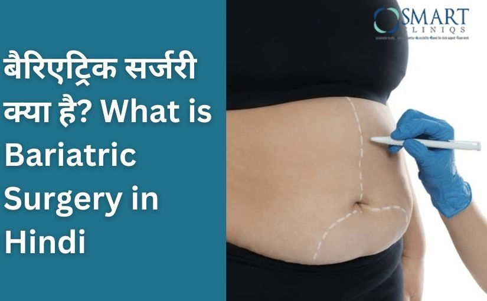

?????? ?? ?? ????? ????????? ?????? ?? ???? ??, ?? ? ???? ???? ?? ??? ?????? ?? ????? ????????, ???? ??????, ???? ???? ?? ???? ??? ???? ?? ????????? ?? ???? ?? ???? ??? ?? ????, ????????? ?? ??????? ???? ??? ?? ??? ???? ???????, ?? ?????????? ?????? ?? ??????? ?? ???????? ?????? ???? ????? ??? ???
What is bariatric surgery in Hindi? ??? ?????? ??? — ?? ?? ??? ????? ?? ?????? ?? ?????? ??? ?? ???? ?? ???? ???? ???? ?? ?? ????? ?? ????? ????? ???? ??? ?????? ?????? ?? ???? ???? ??? ??? ???? bariatric surgery meaning in Hindi “???? ????? ?? ???? ????????” ??? ???? ???
?? ?? ????????? ???? ???????? ??, ??????? Bariatric Surgery in Delhi NCR ???? ???? ????? ???, ???? Dr. Atul Peters ???? ???????? ??? ????? ????? ?? ???? ????
?????????? ?????? ????? ?? ???? ???
?? ?? ??? ??? ?????? ????? ????? ??? ???? ???? ???? ??, ????? ?? ?? ????? ????????? ?? ??? ?? ??? ?? BMI (Body Mass Index) ?????? ????? ???? ??, ?? ???? ?? ????????? ???????? ?? ?? ?? ???? ???
?? ?????? ?????? ?? ?? ????? ?? ??? ???? ?? ??:
- BMI 35 ?? ???? – ??? ??? ??????? ????? ?????? ??
- BMI 30 ?? ???? ?? ????? ????????? ????????
- ????? BMI ?????? ????? ?? ??? 23 ?? ???? ????, ?? ???? ???????? ?? ??? 25 ?? ???? ???? ???? ??, ????? ?? ?? ??? ???? ?? ?????????? ?????? ?? ?????? ??? ?? ???? ?? ?????
- ?? 6–12 ????? ???? + ????????? ???? ?? ??? ?? ??? ?? ???? ?? ???
?????? ????? ?? ??? ?? ????? ?????? ???? ??—?? ???? ?? ???????? ?? ?? ???? ?? ?? ????-???? ?? ??????? ????????? ?? ???? ?? ?? ???? ??? ?????????? ?????? ?????? ?? ???? ?? ?????????, ???????? ?? ????? ????? ???
?????????? ?????? ????? ?????? ?? ???? ???
?????????? ?????? ????? ??? ?? ?? ?????? ?? ???? ??, ????? ??? ???? ?? BMI, ????????? ??????, ???-??? ?? ?????? ?? ??? ????? ?? ?????? ?? ???? ?? ???? ???? ??? ???? ???????? ?????? ?? ??? ?? ??????? ???? ??? ?????? ??? ???
1. Gastric Sleeve Surgery (????? ??????????????)
????????? ????? ?? ?????? ??? ???? ???? ?? ???? ???? ???? ????? ?? ?????? ??? ????? ??? ?? ???? 70–80% ?????? ?? ????????????? ????? ?? ????? ??? ?? ????? ???? ??? (?????) ?? ???? ???? ???? ??? ??? ???? ???? ?? ???? ?? ???? ???? ?? ?? ??? ??? ??? ????? ???? ???? ??, ?? ??? ?????? ???? ??????? “???????” ?? ???? ?? ???? ??? ?????? ?? ??? ??, ?????? ???? ?? ??? ?? ???? ?? ?? ???? ???? ?? ???? ?? ?? ???? ???????? ????????? ???
????? ???:
- ?????? ?? ??? 60–70% ?? ???????? ??? ??
- ????????, BP ?? ???? ???? ??? ???? ?? ?????
- ?????? ??? ???? ?? ???? ???????? ??
2. Gastric Bypass Surgery (??-??-??? ????????? ??????)
?? ?? ??-?????? ????????? ?? ?????? ???? ??? ?? ???? ???? ?? ???? ??? ??? ???? ???? ??, ?? ??? ???? ??? ?? ?? ?? ????? ?? ????? ???? ??? ???? ???? ?? ???? ???? ?? ?? ???? ??? ?????? ?? ?????? ?? ???? ?? ?? ???? ??? ????????? ?????? ????? ??? ?? ?? ?????? ?? ??? ??????? ?? ?? ???? ??? ?? ????????, ???????? ???????? ?? ???? BMI ?? ??? ??? ???? ?? metabolically ???? ????????? ???? ????? ?? ??????? ??? ?? ?? ???
????? ???:
- ????-2 ???????? ??? 80–90% ?? ?????
- 12–18 ?????? ??? ???? ??? ????
- ???? ??? ?? ?????? ??????
3. Mini Gastric Bypass (?? ???????????? ????????? ??????)
???? ????????? ??????, ???????? ????????? ?????? ?? ??? ?? ?? ??? ???? ???? ??????? ??? ????? ?? ???? ????????? ????? ????? ???? ?? ?? ??? ?? ???? ???? ???? ???? ???? ??, ????? ????? ???? ???? ?????? ?????? ??? ??? ??? ??? ?? ?????? ?? ????? ??? ??????? ?? ?? ???? ?? ?? ???? ??????? ??? ??? ????? ????? ??? ??? ????? BMI ???? ???? ???
????? ???:
- ?? ??? ?? ?????? ?? ???? ??????
- ???????? ?????? ?? ????? ??? ?? ????????
- ?????? ?? ????? ????????? ??? ???? ?? ?????
4. Biliopancreatic Diversion with Duodenal Switch (BPD-DS)
?? ???? ????? ?? ???? ?????????? ??????????? ??? ?? ?? ??, ????? ????? ?? ?????? ?? ??? ???? ???? ?? ????? BMI ???? ???? ?? ?? ??????? ??????? ??? ?? ???? ?? ???????? ??? ?? ?????? ??? ???? ????? ?????????????? ?? ???? ?? ?? ??? ????? ?? ?? ???? ??? bypass ???? ??? ????? ????? ???? ??? ???? ???? ?? ?????? ?? ?????? ?????? ????? ?? ??????? ?? ???? ???? ?? ?????? ???? ?????? ?? ????? ????????? ???????? ??? ???? ??????? ?????? ???? ???? ???
????? ???:
- 80–90% ?? ???????? ??? ????
- ??????? ?????????? ?? ????? ???????? ??? ??????? ??????
- ???? ??? ?? ?????? ?? ????????? ???
?????????? ?????? ???? ??? ???? ???
?????????? ?????? ??? ?? ???? ??? ??? ????? ?????? ?? ??? ???? ??:
1. Restriction (????? ????)
??? ?? ???? ???? ?? ???? ???? ??, ????? ???? ?? ???? ?? ????
2. Malabsorption (?????? ?? ????)
???? ??? ?? ????? ?? ????? ????? calories ?? nutrients ?? ?????? ?? ???? ???? ???
3. Hormonal Changes (???????? ?????)
?????? ??? ?? ??????????? ?? ???? ????????? ?? ?? ????? ?? ????? ??? ?? ???? ???
?????????? ?????? ?? ???? ???? ?????
- 60–80% ?? ???????? ??? ??
- ????-2 ???????? ??? 70–90% ?????
- ???? ?????? ????????
- ??????????? ??
- ???? ?????, ?????? ?? ????, ???? ???? ???? ???????? ??? ????
- ??????????? ??? ??????
- ???? ?? ???????? ??? ?????
?????????? ?????? ?? ??? ???? ???? ???? ???
?????????? ?????? ?? ??? ???? ????? ??? ??? ????? ?? ???? ??? ?? ???? ??? ??? ???? ?? ?? ???? ?? ??? ???????? ???? ?? ??? ??? ???? ???? ???????? ??? ?? ??????? ?? ????? ??? ??:
1. ??????? ???? (Liquid Diet) – ???? ??????
?????? ?? ??? ??????? ?????? ??? ??? ???? ????????? ???? ??, ????? ???? ??? ???? ???? ???? ??? ????? ?????? ????, ??? ???, ???? ????? ????, ????????????? ???????? ?? ????? ??????? ??? ????? ???? ???? ?? ??? ?? ???????? ???? ?? ????????? ???? ?? ???? ???? ?? ???? ?? ???? ???? ???? ??? ?????? ??????? ?? ???????? ?????? ?? ????? ??? ???? ??? ???? ?????? ???? ?? ????
2. ??????/????? ???? – ????? ??????
????? ?????? ??? ???? ?????? ?? ????? ???? ?? ??? ????? ?? ??????? ??? ????-???? ????? ??????? ?? ??? ???? ???? ??? ?? ????? ??? ??????, ??? ??????, ???? ??? ????, ????????? ?? ?????? ?? ???????? ??? ??? ???? ???? ???? ?? ?????? ???, ????-???? ?? ????? ??? ??? ?? ???? ?????? ???? ??? ?????? ?? ?? ?? ??? ?? ???????? ???? ???? ???? ???? ?????? ?? ??????? ??? ????
3. ????? ???? – ????? ?? ???? ??????
?? ??? ??? ???? ????? ?? ??? ???? ?? ??????? ???? ???? ??, ????? ????, ?????, ???? ????????, ???????????? ?? ?? ????? ????? ????? ?? ???? ???? ???? ?? ??? ??? ?? ??? ????-???? ??? ???? ?? ???? ?? ???? ??? ?? ??? ??? ?? ????? ???? ?? ???? ???? ???? ???? ????? ???? ?? ???? ???? ????? ?? ???????? ???? ? ?????
4. ??????/????? ???? – ?? ????? ???
?? ????? ?? ??? ???? ????-???? ??????? ???? ?? ?? ???? ??? ???? ??, ????? ?????? ?? ?? ????????? ???? ???? ??? ???? ??? ???-??????? ?????, ???? ????????, ??, ????? ???? ?? ??? ??? ????? ??? ???? ???? ??? ???, ???? ?? ???-??? ??? ???? ??? avoided ???? ??? ??? ???? ?????? ?? portion-control ???? ??? ?? ??? ????? ?? ?????? ?? ?????? ????? ????
????????
?????????? ?????? ?? ????? ?? ??? ?? ??????, ???????? ?? ??????? ???????? ?????? ?? ?? ???? ??? ?? ?????? ?? ???? ????? ????????? ??????? ?? ??? ??? ???? ?? ???? ?? ????? ????? ??? ?? bariatric surgery meaning in Hindi ???? ??, ?? ??? ???? ??? ?? ??? ????? ?? ?? ????? ????????? ?? ?? ??? ?? ?????? ?? ?????? ?????? ?? ????????? ???? ???? ?? ?? ?????? ??? ?? ???? ??? ??? ???? ???
??????? ?? ????????? ???? ?????????? ??, ????? ??????? side effects of bariatric surgery in Hindi—???? ???? ?????? ?? ???, ???? ?? ??????? ???? ????????—?? ???? ??? ?????? ???? ?????? ??? ?? ???????? ?? ?????? ?????? ????? ?? ????, ??????????? ?? ?????? ????-?? ?? ???? ??? ????????? ???? ?? ???? ??? ??? ??????, ?????????? ?????? ????? ??? ????? ?? ????? ????, ????? ?? ??????, ?????? ?? ??????? ???? ?? ?? ????? ?? ?? ?????? ???
????? ???? ???? ???? ????
1. ?????????? ?????? ???? ???? ??? (Meaning of Bariatric Surgery in Hindi)
?? ??? ????? ?? ?????? ?? ?????? ??? ???? ???? ???? ?? ?? ????? ?? ????? ????? ????
2. ???? ?????????? ?????? ????? ??? ???? ???
???, ??? ?? ???? ?? ?????????? ???? ???? ???, ?? 70–80% ?? ??? ?? ???? ??????? ???
3. ???? ?????????? ?????? ???????? ???
?? ?? ????????????? ????? ?? ???? ?? ???? ???????? ???
4. ?????????? ?????? ??? ????? ??? ???? ???
???? 60–120 ?????
5. ?????????? ?????? ?? ???? ???????? ???? ????
??????? ?? ???, ????, ?????? ???—?? ??? ???? ?? ????????? ??? ?? ???? ????
6. ???? ??? ?????? ??? ???? ???
??? ???? ???? ?? ????????? ? ??? ?? ???? ??? ???? ? ???? ???
7. ???? ?? ???? ??????? ?? ?????? ???? ??????
????, ???? ?? ????? ?? ????? BMI 35+ ?? ?? ???? ????? ??? ???? ?? ????
Back to Blog